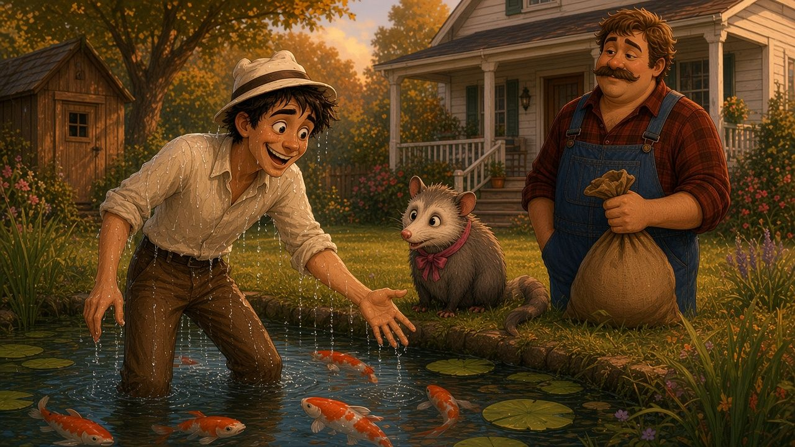
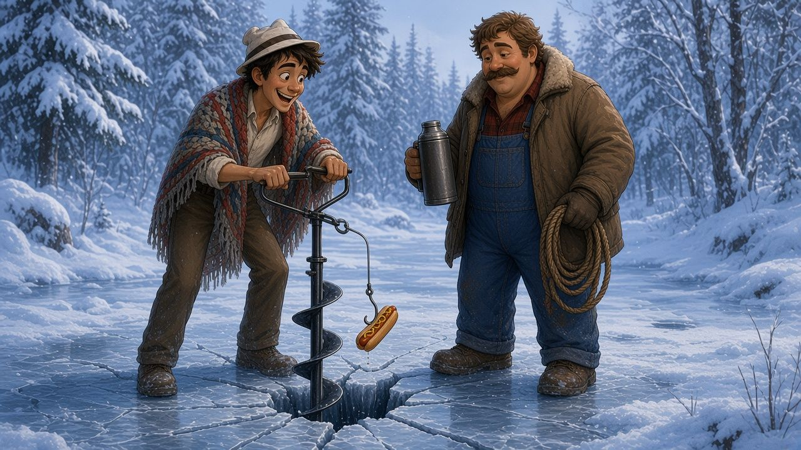
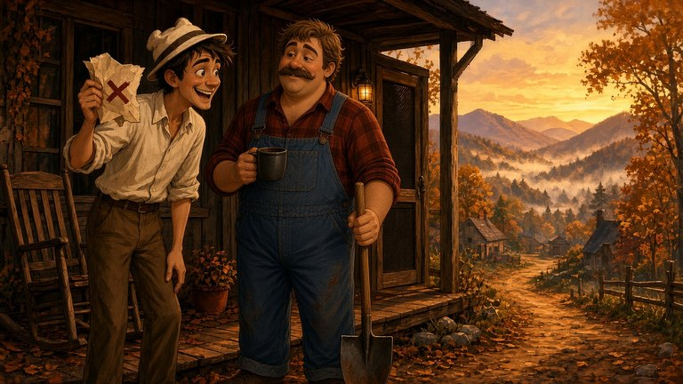
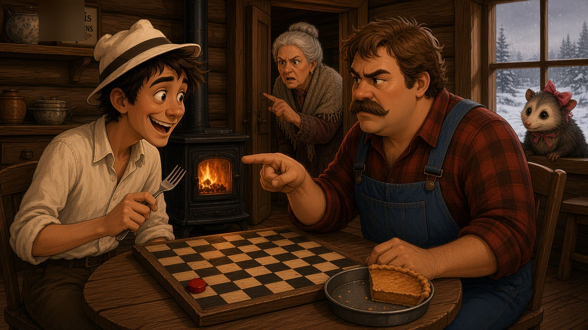
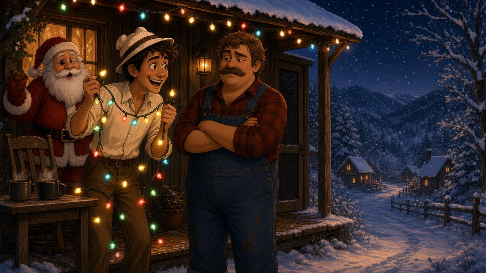

Listen
Listen
Pine Knot radio episodes of Jang & Tom, Dogs That Chose Me, and Thorne’s Lab journal.

Jang & Tom radio show
The Treasure of Miller’s Ridge
Back in Pine Knot, Jang finds a napkin map to Civil War gold. Tom brings the shovel. A barbecue joint called Over Yonder, a cook named Nobody and one very angry groundhog get in the way. 16 minutes 49 seconds.
Music by Kevin MacLeod (incompetech.com), licensed under Creative Commons: By Attribution 4.0

Jang & Tom radio show · Episode 2
The Great Possum Caper
Mrs. Whittaker’s prize possum, Precious, is loose and there’s a $20 reward. Jang splits it “by shares,” plays hawk on the shed roof and lands in the koi pond, while Tom keeps his patience. 18 minutes 21 seconds.
Music by Kevin MacLeod (incompetech.com), licensed under Creative Commons: By Attribution 4.0 · All Jang & Tom episodes

Jang & Tom radio show · Episode 3
The Ice Fishin’ Fiasco
A cold snap freezes the creek, and Jang heads out with Uncle Delbert’s ice auger, his granny shawl and a hot dog for bait. Tom brings coffee and a coil of rope, just in case of Jang. 14 minutes 2 seconds.
Music by Kevin MacLeod (incompetech.com), licensed under Creative Commons: By Attribution 4.0 · All Jang & Tom episodes

Jang & Tom radio show · Episode 4
The Rocket Stove Rebellion
The morning after the ice, Jang shows up with a box of rusty soup cans and a stove plan drawn like a duck. It burns hotter than a tin roof in July, and then it gets loose. 13 minutes 36 seconds.
Music by Kevin MacLeod (incompetech.com), licensed under Creative Commons: By Attribution 4.0 · All Jang & Tom episodes

Jang & Tom radio show · Episode 5
The Checkers Championship
Tom declares a quiet day: a warm wood stove, a pecan pie and a checkerboard older than both of them. Then come kings at heart, a red checker in the pie and Mrs. Whittaker, the loudest mouse in Pine Knot. 13 minutes 34 seconds.
Music by Kevin MacLeod (incompetech.com), licensed under Creative Commons: By Attribution 4.0 · All Jang & Tom episodes

Jang & Tom radio show · Episode 6
The Christmas Light Caper
December snow, fifty-percent-off lights and a one-eyed Santa from the hardware store trash heap. Jang wants a house visible from the moon; Tom wants one strand. They settle on one red bulb for Rudolph, and then Jang throws the switch. 13 minutes 28 seconds.
Music by Kevin MacLeod (incompetech.com), licensed under Creative Commons: By Attribution 4.0 · All Jang & Tom episodes

Jang & Tom radio show · Episode 7
The Cookie Conspiracy
Tom’s once-a-year secret: snickerdoodles and peanut butter blossoms for the church Christmas bazaar, and a cookie on the cat. Jang talks him into a double batch for the cookie swap and calls eating a dozen quality control. 11 minutes 46 seconds.
Music by Kevin MacLeod (incompetech.com), licensed under Creative Commons: By Attribution 4.0 · All Jang & Tom episodes

Storyboard animation
Jang & Tom Wagon Masters (Animated)
A narrated storyboard animation of Jang & Tom: Wagon Masters, the audiobook re-voiced with a full cast, sound effects and hand-drawn storyboards, in 4 episodes, 21:06 in all.
Buy the book on Amazon About the bookTwo debtors fleeing a Philadelphia financier sell themselves as expert trail guides, hire the real thing in Silas Crowe, and turn their first river crossing into a legend by accident.
Audiobook · a short story by Jason Collier
Dogs That Chose Me
Elias never chose a dog. From a lonely farm boy on a rainy porch to an old man on an autumn evening, the dogs always found him, and the first one never really left. 7 minutes 44 seconds.